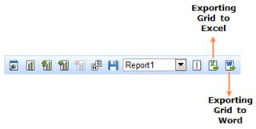

The grid and chart control can be exported to the following formats:
· Excel and
· Word
The user can perform selective export by applying any one of the below options:
1. ChartOnly
2. GridOnly
3. ChartAndGrid
The OLAP Client toolbar provides the option to perform the export operation on grid and chart control. By clicking any one of the export buttons, the user can export the grid and chart to the corresponding format.

Figure 46: Exporting grid to excel and word
Table 16: Export options in OLAP Client Toolbar
|
Name |
Description |
|
Exporting to Excel |
This option is used to export the grid and chart data to excel format |
|
Exporting to word |
This option is to export the grid and chart to word format |
There are three options available to perform selective export.
Table 17: Selective export options
|
Options |
Description |
|
ChartOnly |
Exports only chart control |
|
GridOnly |
Exports only grid control |
|
ChartAndGrid |
Exports both grid and chart control |
The following code snippet describes the selective export.
|
[C#] this.OlapClient1.ExportMode = ExportMode.ChartOnly; // Exports only chart control. this.OlapClient1.ExportMode = ExportMode.GridOnly; // Exports only grid control. this.OlapClient1.ExportMode = ExportMode.ChartAndGrid; // Exports both grid and chart control. |
|
[VB] Me.OlapClient1.ExportMode = ExportMode.ChartOnly ' Exports only chart control. Me.OlapClient1.ExportMode = ExportMode.GridOnly ' Exports only grid control. Me.OlapClient1.ExportMode = ExportMode.ChartAndGrid ' Exports both grid and chart control. |
Table 18: ExportMode Property
|
Property |
Description |
Type |
Data type |
Reference link |
|
ExportMode |
This option would allow the user to export selective controls. It may be either chart or grid or both chart and grid. |
Server side |
enum |
- |
Sample Link
A sample demo is available at the following link:
..\Syncfusion\EssentialStudio\<Version Number>\BI\Web\OlapClient.Web\Samples\3.5\OlapClient\ OlapClientDemo